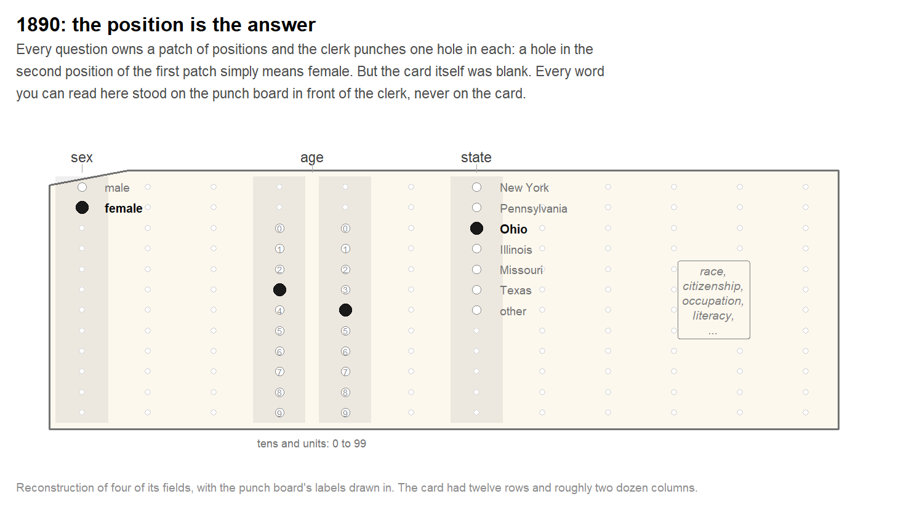
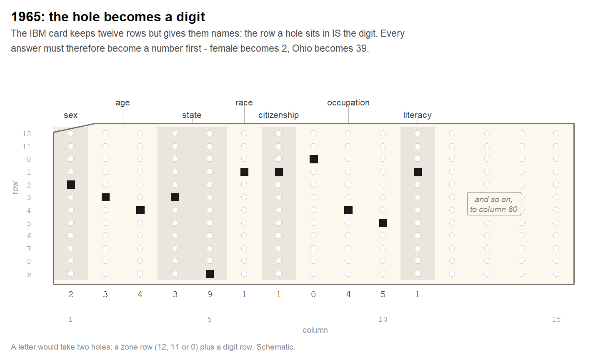
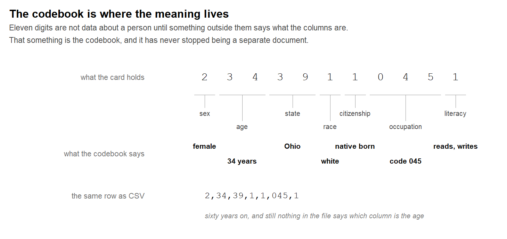

2.5 Files and Formats
"Write programs to handle text streams, because that is a universal interface."
The 1880 census of the United States took eight years to count. The constitution demands one every ten years, so the arithmetic was becoming absurd: by the time the country knew what it had been in 1880, it was nearly 1890 and the question had changed.
A young engineer at the Census Office thought the problem was not the counting but the paper. Herman Hollerith proposed that each person be represented by a card with holes punched in it — one position for each answer — and that a machine, rather than a clerk, add them up. The Census Office ran a competition in 1888. Hollerith captured the data in 72.5 hours; his two competitors needed 144.5 and 100.5.26
The machine is worth picturing, because it explains everything that follows. A card sat under a frame of spring-loaded wires, and beneath the card were small cups of mercury. Lower the frame: where the card was solid, the wire stopped; where a hole had been punched, the wire went through and dipped into the mercury, closing an electrical circuit. The circuit advanced a dial. Forty dials on the front of the machine, forty things counted at once.
The first machine-readable data set in history was a social survey. The holes recorded age, sex, state of residence, citizenship and race — the variables of any survey since. The 1890 census produced roughly a hundred million cards and finished months ahead of schedule. Hollerith's company later merged into what became IBM.
Figure 2.8 reconstructs one of those cards, with the labels of the punch board drawn in so that it can be read at all. It is worth a slow look, because everything that follows in this section is a reaction to it.

Figure 2.8: A card from the 1890 census, reconstructed with the punch board's labels drawn onto it. Every question owns a patch of positions and one hole is punched in each, so the position is the answer. Age is the exception, and the reason nobody on such a card can be older than 99.
2.5.1 The tyranny of the column
Now the part that matters for your own files, and it is easy to miss when you look at a reconstruction like Figure 2.8: the cards themselves were blank. Not sparsely labelled — blank. Everything you can read in that figure is a reading aid; a real card from 1890 is a rectangle of cardboard with holes in it and nothing else.
The labels existed, but they were attached to the machine rather than to the data. A clerk punching cards did not look at the card at all: the card sat in the punch station above a template, and the clerk moved a stylus across the template, which carried the layout of the fields. To read a deck afterwards there was a second board — Columbia's computing history collection calls it the decoder ring for the holes.27 Layout on the board, values on the card, and the two kept in different pieces of furniture.
Why not simply print the field names along the edge? Because the printing would have belonged to the form, not to the record. A hundred million cards would have carried a hundred million identical copies of the same twenty words, and the census would have paid for the paper. One template served the whole deck.
That economy has never gone away, and neither has its price. One codebook still serves a million rows of a CSV; the file is small and the meaning is somewhere else. Column 5 means age because a document in another folder says so, and for no other reason.
The failure mode is the one to remember. Punch a value one column too far to the right and nothing breaks. The card is valid, the machine reads it, the dial turns, and an age of 34 has quietly become something else. There is no error message, because there is no way for a hole to be wrong.
Programmers lived with the same discipline. On a Fortran card, columns 1 to 5 were reserved for a statement label, column 6 marked a continuation, and the program itself was allowed to occupy columns 7 to 72 — a variable named xnew that started too far to the right became x, silently, because everything past column 72 was ignored.
And the last eight columns, 73 to 80, held nothing but a card number. They existed for one reason: so that the unlucky programmer who dropped the deck had some chance of putting it back in order.28
The card in Figure 2.9 is the same respondent as before, on the machine that replaced Hollerith's. Something has changed in between: the twelve rows have been given names, and the row a hole sits in now is a digit. Every answer must therefore be turned into a number before it can be stored at all.

Figure 2.9: The same respondent on an IBM card, seventy-five years later. The row a hole sits in is the digit, so every answer has to become a number first - and no column says what it holds.
Somebody's fix for the tyranny of the column was to put a comma between the values. Position stopped mattering, a mispunched digit became a visible mistake rather than a silent one, and the file could be read by a program that had never seen the codebook. The IBM Fortran compiler under OS/360 could read such lists in 1972; the name comma-separated values appears in print by 1983; a written specification followed in 2005.29
2.5.2 The codebook never went away
It would be comfortable to file this under history. It is not history.
Open any CSV of survey data today and you face precisely the questions the card faced. Does 0 mean male or does it mean the first category of something else entirely? Is 1 a yes, a Monday, or a satisfaction of one point on a scale that starts at zero? And what is -7?
That last one is not hypothetical. The SOEP data used throughout this book code missing answers as negative numbers — -1 for no answer, -2 for does not apply, -7 for only available in the restricted edition — which is why Section 4.1 spends several pages on the difference between a value and the absence of one. Read those columns without the codebook and you compute an average life satisfaction somewhere below zero, on a scale from 0 to 10, and nothing anywhere objects.
Figure 2.10 puts the two halves side by side. The digits are the same in 1965 and today; what turns them into a person is a document that travels separately, can be lost, and is written by hand.

Figure 2.10: Eleven digits, and what stands between them and a person. The card and the CSV row hold identical information, and neither can be read without the table in the middle.
So the comma solved the problem of position and left the problem of meaning exactly where it was. Every format invented since is an attempt at the second one, and what separates them is a single question: does the codebook travel in the same box as the data, or does it stay in the drawer?
CSV leaves it in the drawer. Excel leaves it in the drawer and rewrites some of your values on the way. Stata and SPSS put it in the box. A Data Package straps it to the outside of the box. DDI publishes it as a book of its own. And modern software has added something the punched-card clerk would have envied: it shows you both at once, the code and its meaning in the same cell, because that is what a human needs to see. You will find that in the Stata section below — and it is the reason this book reads its SOEP data as .dta rather than as CSV.
Eighty columns, and you are still living in them
The IBM card held eighty characters per line. The video terminals that replaced it — DEC's VT52 and VT100 — showed eighty characters per line. The original IBM PC text mode was 80 × 25. And the style guides of Python, Java and R still recommend that a line of code should not exceed eighty characters.
The margin line in your RStudio editor is at column 80. It is the width of a punched card, and nobody has quite got round to changing it.30
CSV is still the first thing every statistical office, data portal and survey archive offers you — and, incidentally, the most common file in this book's own data/ folder. The oldest format is also the most used one, which is the question this section is about. If CSV is enough, why does anyone build anything else?
2.5.3 What a file is, and what a format is
Definition
A file is a sequence of bytes with a name. That is all the operating system guarantees.
A file format is an agreement about what those bytes mean — which of them are a number, where one record ends, whether the first line is a header. The agreement lives in documentation and in software, never in the file's name.
The extension (.csv, .dta) is a hint about which agreement applies. It is written by whoever saved the file and is checked by nobody.
Two consequences follow. The first: a file can lie about itself. An extension is a claim, not evidence — you can rename data.csv to data.xlsx in Windows Explorer or the Finder, and not one byte inside it changes. The file is still a CSV; only the label on the tin is now wrong, and the next program to open it will complain about something that has nothing to do with the real problem.
Windows hides the extension by default. In Explorer, Hide extensions for known file types is switched on out of the box, which means a file displayed as survey.csv may actually be called survey.csv.txt — and a file displayed as report may be anything at all. Turn extensions on once (in Windows 11: View → Show → File name extensions) and leave them on. You cannot reason about a file whose name you are not being shown.
The second consequence: whatever the format does not record must be supplied by the reader — from an argument you pass, from a convention, or from a guess.
Size is the one property you get for free, and it is more informative than it looks. Here is the same table — the same 23,522 rows, the same 15 columns, the same numbers in every cell — written six ways:
soep <- read_dta(file.path("data", "SOEP", "practice_en", "practice_dataset_eng.dta"))
tmp <- tempdir()
write_csv(soep, file.path(tmp, "soep.csv"))
write_csv(soep, file.path(tmp, "soep.csv.gz")) # readr compresses by extension
saveRDS(soep, file.path(tmp, "soep.rds"))
saveRDS(soep, file.path(tmp, "soep_raw.rds"), compress = FALSE)
tibble(
Format = c("`.rds` (R, no compression)", "`.csv`", "`.dta` (as delivered)",
"`.csv.gz`", "`.rds` (R, compressed)"),
KB = round(c(
file.size(file.path(tmp, "soep_raw.rds")),
file.size(file.path(tmp, "soep.csv")),
file.size(file.path("data", "SOEP", "practice_en", "practice_dataset_eng.dta")),
file.size(file.path(tmp, "soep.csv.gz")),
file.size(file.path(tmp, "soep.rds"))
) / 1024),
`Keeps the labels` = c("yes", "no", "yes", "no", "yes")
) %>%
kable(caption = "One table, five files. Parquet would sit at about 426 KB.")| Format | KB | Keeps the labels |
|---|---|---|
.rds (R, no compression) |
2767 | yes |
.csv |
1339 | no |
.dta (as delivered) |
1152 | yes |
.csv.gz |
386 | no |
.rds (R, compressed) |
286 | yes |
Three things in that table are worth more than the numbers themselves.
Compression is its own dimension. The same .rds is 2,767 KB or 286 KB depending on one argument. Compression is not a property of a format but a decision inside it — and .dta, delivered uncompressed, is larger than a gzipped CSV holding the same data.
Text does not have to be big. write_csv() compresses automatically when the file name ends in .gz, and read_csv() decompresses it again without being asked. That single character sequence takes the most transparent format from 1,339 KB to 386 KB — smaller than Parquet — while the file remains a plain CSV the moment anyone unpacks it. For sending data by mail or committing it to a repository, .csv.gz is an underrated answer.
And size says nothing about content. Read the last column. The biggest file in the table is the one that carries the least: the CSV has lost every value label on the way out, and no amount of storage brings them back. The smallest file that keeps everything is the one only R can open. That trade-off — readable, complete, small: pick two — runs through everything below.
2.5.4 Tables are most of it
The four previous sections were all about rectangles — cross-sections, panels, time series, and rectangles living on a server. That emphasis is not an accident of this book. Most data that gets analysed is tabular, because most measurement produces one number per unit per variable, and a table is the smallest thing that holds it.
But "most" is not "all", and the exceptions cluster. Rather than guess at proportions, we can ask the institutions whose job this is. The archives that social scientists deposit data with — and download it from — publish exactly which formats they want, and their lists are a fair map of what actually circulates in the field.
| Kind of data | Recommended | Accepted |
|---|---|---|
| Tabular, with extensive metadata | SPSS .sav, Stata .dta, SAS .sas7bdat; delimited text plus setup files and DDI XML |
SPSS portable .por, MS Access |
| Tabular, minimal metadata | .csv, tab-delimited .tab, with the character set stated |
.txt, .xls/.xlsx, OpenDocument .ods |
| Qualitative text | XML against a schema, .rtf, plain .txt |
HTML, .doc/.docx, NVivo and ATLAS.ti formats |
| Geospatial | ESRI Shapefile (.shp, .shx, .dbf essential, .prj optional), GeoTIFF |
Geodatabase, MapInfo, KML |
| Images | TIFF v6, uncompressed | JPEG, PDF/A, PNG |
Two things in that table are worth noticing before we go on.
The first is what is not in it. Five kinds of data cover an entire discipline's archive, and four of the five recommendations are formats you will meet in this section.
The second is stranger, and it is the argument of this whole chapter in one row. An institution whose profession is long-term preservation — people who will tell you at length that open formats outlive proprietary ones — recommends SPSS and Stata files for tabular data with metadata.31 Proprietary formats, at the top of the list, from an archive. There is exactly one reason: they are the only ones that carry the codebook. The alternative offered in the same cell is telling — delimited text plus setup files plus DDI XML, which is to say: a CSV and two extra documents to make up for what the CSV cannot hold.
| Format | Since | From | Answers the question |
|---|---|---|---|
.csv |
1972 | IBM Fortran | how do I write a table anyone can read? |
.xlsx |
2006 | Microsoft, ECMA-376 | how do I keep formatting, formulas and sheets? |
.dta / .sav |
1985 / 1968 | Stata, SPSS | how do I keep types and value labels? |
.rds / .RData |
2001 | R 1.4.0 | how do I save an R object exactly as it is? |
.pkl / .npy |
2007 (.npy) |
Python, NumPy | the same, for Python |
.json / .jsonl |
2001 / 2013 | Douglas Crockford | how do I write something that is not a rectangle? |
.parquet / .feather |
2013 / 2016 | Twitter & Cloudera, Arrow | how do I read one column out of a huge table? |
.duckdb |
2019 | CWI Amsterdam | how do I query a file I never loaded? |
.shp (+ 4) |
1998 | Esri | how do I store a shape rather than a number? |
2.5.5 Why new formats keep appearing
Read that last column downwards and the history turns into one sentence repeated with different objects: someone hit a wall that the previous format could not get past.
Position was the first wall, and you have just seen it. The comma removed the dependence on position — at the price of a new ambiguity, because a comma inside a value now needs an escape. Every solution buys its own problem.
Meaning was the second. A CSV column of zeros and ones could be sex, employment or a coin flip; the file cannot say, and the codebook is back in the drawer. Statistical packages therefore built formats that carry the dictionary with the numbers: SPSS from 1968, Stata from January 1985.32 The price is that only their own software opens the result.
Hierarchy was the third. Some things are not rectangles — a household containing persons containing jobs. XML arrived in 1998 to write such trees, and it was thorough, so thorough that a document could dwarf the data in it. Douglas Crockford published a lighter notation for the same job in 2001.33 JSON became the answer of every web API, which is why Section 2.4.2 received one.
Excel's wall was openness. The binary .xls was a sealed format only Microsoft fully understood. Its replacement, standardised as ECMA-376 in December 2006, is a ZIP archive of XML documents — a spreadsheet rebuilt out of the two formats above.34
Size was the fourth wall, and it is recent. When a table has a billion rows and fifty columns and you want three, a row-by-row format makes you read all fifty. Google described the alternative in the Dremel paper of 2010; Twitter and Cloudera released Parquet in March 2013.35 Three years later Feather let R and Python hand a table to each other without either of them converting anything.36
Nobody replaced CSV, and nothing here is obsolete. Each format answers a question the earlier ones could not, and each is still the best answer to its own. Choosing well means knowing which question you are asking.
2.5.6 Everything is a text file (until it is not)
There is one way to settle what a file contains, and it works for every format above: look at the bytes.
Most files in this repository survive that treatment intact, because they are text — the .Rmd files you are reading, the .R scripts, DESCRIPTION, references.bib, .gitignore, every .csv, and the .do file Stata used to build the SOEP practice data.
Definition
A plain text file is one whose bytes are meant to be read as characters. What turns bytes into characters is the character encoding, today almost always UTF-8 — which was sketched out, in Rob Pike's account, "on a placemat in a New Jersey diner one night in September or so 1992".37
Plain text is not a format. It is the material most formats are written on.
Here is the tool for the rest of this section. It reads the first bytes of a file and replaces everything unprintable with a dot, exactly as a hex editor does:
peek <- function(path, n = 240) {
b <- readBin(path, what = "raw", n = n)
keep <- b == as.raw(9) | b == as.raw(10) | (b >= as.raw(32) & b <= as.raw(126))
b[!keep] <- as.raw(46) # 46 is a full stop
cat(rawToChar(b))
}Everything below is that function pointed at one file after another. What you see is what your text editor would show you.
2.5.7 CSV
peek(file.path("data", "Course", "GF_AllTime.csv"), 200)
#> Term;Academic.level;Gender;Age;Total.Semesters;Background.in.Statistics;Background.in.R;Background.in.Academic.Writing;Expectations.
#> SS 2020;Bachelor;Female;25;6;3;1;3;doing an empirical analysis withThe whole format is visible in two lines: a header, then one record per line, fields separated — here by semicolons rather than commas, because the file was written by a German spreadsheet, where the comma is already the decimal mark. read_csv2() expects exactly this variant.
Good for. Everything is readable, repairable and diffable; every program on earth opens it; a broken file can be fixed by hand.
Cannot do. It records no types, no separator, no encoding, no missing-value convention. Whatever the file does not say, the reader invents — and readers invent differently:
csv_demo <- "postcode,share\n01067,0.5\n10115,0.25\n"
read.csv(text = csv_demo)$postcode # base R
#> [1] 1067 10115
read_csv(csv_demo, show_col_types = FALSE)$postcode # readr
#> [1] "01067" "10115"01067 is the postcode of central Dresden. One reader makes it the number 1067 and loses the zero for good; the other keeps it as text. Nothing failed and nothing warned. The remedy is to stop hoping: col_types = cols(postcode = col_character()).
2.5.8 Putting the codebook back next to the data
The card had a codebook in a drawer; a CSV has the same problem and a modern answer. A Data Package is a small datapackage.json file that lies beside your CSV and declares what the CSV cannot: the type of every column, the missing-value markers, constraints, and how tables relate to one another.38
{ "name": "soep-practice",
"resources": [{
"path": "soep.csv",
"schema": { "fields": [
{ "name": "id", "type": "integer" },
{ "name": "syear", "type": "year" },
{ "name": "sex", "type": "integer", "categories": [
{ "value": 0, "label": "male" }, { "value": 1, "label": "female" } ] }
],
"missingValues": ["", "-1", "-2", "-8"] }
}]}The data stay a plain CSV that anyone can open; the meaning sits in a text file next to them that a machine can read. SAGE Research Methods recommends the arrangement to social scientists for exactly the reason the next box describes.
2.5.9 Excel
peek(file.path("data", "Course", "CourseData.xlsx"), 120)
#> PK..........!.b..h^...........[Content_Types].xml ...(..................................................................PK — the initials of Phil Katz, who wrote the ZIP format. An .xlsx file is a zipped folder, and unzip() lists its contents without extracting anything:
xlsx <- file.path("data", "Course", "CourseData.xlsx")
head(unzip(xlsx, list = TRUE)$Name, 8)
#> [1] "[Content_Types].xml" "_rels/.rels"
#> [3] "xl/_rels/workbook.xml.rels" "xl/workbook.xml"
#> [5] "xl/sharedStrings.xml" "xl/theme/theme1.xml"
#> [7] "xl/styles.xml" "xl/worksheets/sheet1.xml"Inside are XML documents: one for the workbook, one per sheet, one holding every string in the file exactly once. .docx and .pptx are built the same way.
Good for. Several sheets in one file, formatting, formulas, and — the honest reason it dominates — everybody already has it and can edit it without learning anything.
Cannot do. Leave your values alone. Excel interprets what it reads, and its interpretations are irreversible.
The genes that had to be renamed
In 2016 Mark Ziemann and colleagues screened the supplementary Excel files of eighteen genomics journals. In 19.6 % of the papers, gene names had been silently converted: SEPT2 had become the date 2 September, MARCH1 had become 1 March.39 Five years later the same group repeated the screen. The rate had risen to 30.9 %.40
At which point the field gave up on the software and changed the data. In 2020 the HUGO Gene Nomenclature Committee renamed the affected genes — SEPT1 became SEPTIN1, MARCH1 became MARCHF1 — so that a spreadsheet would stop reinterpreting them.41
Human genetics adjusted its naming conventions to accommodate a file format's opinion about what the data means.
Read Excel files with readxl::read_xlsx(), which never opens Excel and therefore never triggers the conversions. And where a column matters — an ID, a postcode, a gene — pass col_types = "text" and convert deliberately afterwards.
2.5.10 Stata and SPSS
peek(file.path("data", "SOEP", "practice_en", "practice_dataset_eng.dta"), 200)
#> <stata_dta><header><release>118</release><byteorder>LSF</byteorder><K>..</K><N>.[......</N><label>..</label><timestamp>. 6 Jan 2022 15:18</timestamp></header><map>........................X............Markup, then rubble. Since Stata 13 the skeleton of a .dta file is XML-like text — you can read the format version (118), the byte order, and the moment this file was written — while the values themselves are binary.42
Good for. It carries the codebook. Every column has a label, and coded columns carry a dictionary of what the codes mean. This is why the book reads SOEP data in this format rather than as CSV:
attr(soep$sex, "label") # what the column is
#> [1] "Sex"
attr(soep$sex, "labels")[9:11] # what its codes mean
#> [0] male [1] female [2] female
#> 0 1 2haven keeps that dictionary as an attribute; as_factor() turns it into a factor; zap_labels() throws it away.
And this is the part the punched-card clerk would have envied. You do not have to choose between the code and its meaning, and you do not have to keep a second document open beside the data. R prints both, in the same cell:
soep %>% select(id, syear, sex, erwerb) %>% head(4)
#> # A tibble: 4 × 4
#> id syear sex erwerb
#> <dbl> <dbl> <dbl+lbl> <dbl+lbl>
#> 1 194 2015 1 [[1] female] 2 [[-2] Employed part-time]
#> 2 194 2016 1 [[1] female] 2 [[-2] Employed part-time]
#> 3 194 2017 1 [[1] female] 2 [[-2] Employed part-time]
#> 4 194 2018 1 [[1] female] 2 [[-2] Employed part-time]Look at the column type: <dbl+lbl>, a number plus what the number means. The analysis works with the code, the reader sees the label, and neither has to be converted into the other. Ninety years after a wire dipped into a cup of mercury, the hole and the codebook are finally in the same place — and displayed side by side, which is a separate achievement.
It is also the fastest way to spot the fault described below: read the erwerb column and you will see the value 2 carrying the text [-2].
Cannot do. Guarantee the dictionary is right. Labels never appear beside the numbers, and nobody proof-reads them. This very file — used in five chapters — contains two faults:
table(as_factor(soep$sex)) # eleven levels, two of them occupied
#>
#> 0 1
#> 10762 12760
attr(soep$erwerb, "labels")[8:9] # the bracketed codes contradict the values
#> [-1] Employed full-time [-2] Employed part-time
#> 1 2Eleven levels: eight missing-value codes that never occur here, one duplicate female, and the two respondents actually have. And in erwerb, the value 1 carries the label text [-1] Employed full-time — while negative numbers are precisely what this data set uses for missing values (Section 4.1). The values are sound; their description is not.
Metadata are data. They can be missing, they can travel with the file, and they can be wrong — and because they are never printed beside the numbers, an error in them survives every check you are likely to run.
2.5.11 The codebook as its own file
Your field solved this a long time ago, and you have probably downloaded the solution without opening it. DDI — the Data Documentation Initiative — is an XML standard for describing a data set: every variable, every category, the question wording, the universe, the collection method.43 GESIS, ICPSR and the SOEP all publish their codebooks this way.
It is the punched-card codebook, finally machine-readable and finally shipped in the same box as the deck.
2.5.12 R's own formats
#> ...........Z......,`0.@...&.....w.H+.V...5_6..W.k.Z..4f>D..vNothing readable at all: an .rds file is a compressed dump of R's internal representation, in the serialisation format that has been R's default since version 1.4.0 in December 2001.44
Good for. It saves anything — not only tables, but fitted models, lists, functions — and restores them exactly, attributes and labels included. For an intermediate result in a long analysis it is the right choice: saveRDS(model, "model.rds"), model <- readRDS("model.rds").
Cannot do. Be opened by anything but R. Never hand an .rds to a colleague as a deliverable, and never use it as an archive.
.RData (via save() and load()) is the older sibling and stores several objects at once under their own names — which is exactly why it is the worse choice: load() silently overwrites whatever in your workspace shares a name. One object, one file, readRDS().
2.5.13 What Python uses
Sooner or later a collaborator sends you their data and it is neither CSV nor Excel. Two formats account for most of those messages.
.pkl is Python's .rds: any object, serialised exactly. It has one property that R's has not, and it is worth knowing about before you double-click anything:
>>> pickle.loads(b"cos\nsystem\n(S'echo hello world'\ntR.")
hello worldThat is from Python's own documentation. Unpickling a file runs code from it, so the manual says plainly: "The pickle module is not secure. Only unpickle data you trust."45 A pickle from an unknown source is not a data file; it is a program.
.npy and .npz hold NumPy arrays. They were designed in 2007 precisely because pickle could not do two things a large array needs: be loaded without duplicating itself in memory, and be read from disk in pieces.46 And they open with a header written as readable ASCII — the shape of the array and the type of its values, in plain text, before the numbers begin. The same arrangement as a Stata file, arrived at independently.
What .npy has not got is column names, because an array does not have any.
Neither belongs in an exchange between two people. The bridge is the pair from the next section: Feather to hand a table across the language boundary in one session, Parquet to store one. arrow::read_feather() in R and pandas.read_feather() in Python read the same file, and neither language has to know the other exists.
2.5.14 JSON
peek(file.path("data", "Geo", "Germany", "Germany_Coordinator_60.json"), 160)
#> [[540,332],[522.7839050292969,294.9807434082031],[515.7578125,251.5562744140625],[492.917236328125,214.66256713867188],[502.08544921875,170.2926483154297],[480.Brackets inside brackets. That is the point of the format, and it is where the rectangle ends.
Definition
JSON (JavaScript Object Notation) writes data as nested objects and arrays. A field may hold a value, another object, or a list of any length — so two records in the same file need not have the same fields at all.
It is not a table format. It is a tree, and using it means deciding how to flatten it.
Good for. Everything with depth: an API answer, a configuration, a record with a variable number of children. Text, so you can read it; nested, so it can describe what a table cannot.
Cannot do. Fit into a data frame without a decision from you:
records <- '[
{"id": 1, "name": "Anna", "langs": ["de", "en", "fr"]},
{"id": 2, "name": "Boris", "langs": []}
]'
people <- jsonlite::fromJSON(records)
tibble::as_tibble(people) %>% tidyr::unnest_longer(langs)
#> # A tibble: 3 × 3
#> id name langs
#> <int> <chr> <chr>
#> 1 1 Anna de
#> 2 1 Anna en
#> 3 1 Anna frTwo people went in and one came out. langs is a column of vectors, and unnest_longer() drops a row whose vector is empty unless you pass keep_empty = TRUE. No warning was issued. Every conversion from a tree to a rectangle contains a choice like this, and it is yours whether you make it deliberately or not.
2.5.15 One object per line
A whole JSON file is a single expression: the reader must consume all of it before any of it is valid. For a log that grows all day, or an export of two million records, that is the wrong shape.
JSON Lines — .jsonl, also called newline-delimited JSON — writes one complete object per line:
{"id": 1, "name": "Anna", "langs": ["de", "en", "fr"]}
{"id": 2, "name": "Boris", "langs": []}No enclosing brackets, no commas between records. wc -l counts your cases, head shows you the first ten, a crash costs you the last line rather than the file, and you can append tomorrow's records without rewriting yesterday's. It has become the ordinary way to ship large record collections, and jsonlite::stream_in() reads it.
When it arrives as one endless line. Servers omit indentation to save bandwidth, which makes an answer unreadable for humans. jsonlite::prettify() puts it back — the bytes do not change, only what you are shown. xml2::read_xml() does the same for XML.
2.5.16 Parquet, Feather and DuckDB
peek(file.path("data", "mtcars.feather"), 80)
#> ARROW1................
#> .........
#> .............
#> .........
#> .......................ARROW1, then nothing legible. Both formats store data by column rather than by row: to read three of fifty columns you read three fiftieths of the file, and because a column holds values of one kind, it compresses far better than a row that mixes all of them.
That much they share. What makes them two formats rather than one is a genuinely clever split, and it is worth a paragraph because it is the only case in this section where two formats were designed as a pair.
Feather is the memory. Arrow's on-disk layout is byte-for-byte the layout Arrow uses in RAM, so opening the file requires no translation at all: the program maps the file into memory and the columns are simply there.47 No parsing, no type conversion, no rebuilding of objects — the step that consumes most of the time when you read a CSV does not happen, because there is nothing to convert. That is what "zero-copy" means, and it is why the same file can be handed to R and to Python without either language reformatting it.
Parquet is the archive. It spends effort where Feather refuses to: dictionary encoding for repeated strings, run-length encoding for repeated values, compression on top. The result is small and stable enough to publish, at the price that it cannot be used directly — it has to be decoded in blocks before anything can compute with it.
Parquet trades reading speed for compactness; Feather trades disk space for computing speed. Which is why they are usually found together: store in Parquet, work in Arrow.
Good for. Size and speed. The SOEP table above is 1,339 KB as CSV and about 426 KB as Parquet, with the column types preserved.
# nanoparquet is tiny and needs no system libraries.
nanoparquet::write_parquet(soep, file.path("data", "soep.parquet"))Cannot do. Be inspected without the right software, or carry a survey codebook.
And then there is the format that is a database in a single file. DuckDB — built at the CWI in Amsterdam, the same institute that produced Python — stores tables column by column inside one .duckdb file, and needs no server at all.48 Two things make it worth a paragraph in a book about data rather than about engineering.
First, it reads Parquet and CSV directly, without importing them:
con <- DBI::dbConnect(duckdb::duckdb())
DBI::dbGetQuery(con, "
SELECT syear, AVG(lebensz_org) AS satisfaction
FROM 'data/soep.parquet' -- the file is never loaded
WHERE alter BETWEEN 25 AND 65
GROUP BY syear ORDER BY syear
")Second, everything you learned in Section 2.4 applies unchanged — dbplyr translates the same dplyr verbs, and only the answer arrives in memory. The size limit stops being your computer's memory and becomes your disk.
Honestly, at this size none of it matters. 23,522 rows load in under a second whatever the format. These three earn their place because public data are increasingly published as Parquet, and because they are the door to tables that do not fit in memory.
2.5.17 Shapefile: one format, five files
The last entry is the strangest, and it is the bridge out of this chapter. A shapefile is not a file:
list.files(file.path("data", "Geo"), pattern = "MS_Gebiete")
#> [1] "MS_Gebiete.dbf" "MS_Gebiete.prj" "MS_Gebiete.qpj" "MS_Gebiete.shp"
#> [5] "MS_Gebiete.shx".shp holds the geometry, .shx the index into it, .dbf the attribute table — a format from dBASE, 1983 — and .prj the coordinate reference system. Four are binary. The fifth is plain text:
peek(file.path("data", "Geo", "MS_Gebiete.prj"), 200)
#> PROJCS["Hotine_Oblique_Mercator_Azimuth_Center",GEOGCS["GCS_Bessel 1841",DATUM["D_unknown",SPHEROID["bessel",6377397.155,299.1528128]],PRIMEM["Greenwich",0],UNIT["Degree",0.017453292519943295]],PROJECA projection in Well-Known Text: an oblique Mercator on the Bessel ellipsoid of 1841. Without this file, the numbers in .shp are coordinates on an unnamed planet — which is why sending a colleague only the .shp sends them nothing usable. sf::st_read() reads the whole set when you name the .shp, and Section 3.3 does the rest.
2.5.18 Choosing
| If you want to | Use |
|---|---|
| hand data to someone whose software you do not know | .csv |
| hand over a CSV and still say what the columns mean | .csv + datapackage.json |
| keep the codebook attached to the values | .dta / .sav |
| save a fitted model or any other R object | .rds |
| store something that is not a rectangle | .json |
| append records all day without rewriting the file | .jsonl |
| publish or archive a large table | .parquet |
| pass a table between R and Python | .feather |
| query something too large to load | .duckdb |
| let a colleague edit it by hand | .xlsx, and check what it changed |
Three habits cover the rest. Look at the first bytes before trusting a file — one call to peek() settles what a download actually contains. State what you know instead of letting a reader guess: col_types, the separator, the encoding. And keep the raw file, whatever it is. Every conversion loses something, and the only copy that has lost nothing is the one you were given.
2.5.19 Where this leaves us
Five sections asked what a row means and where the table lives. This one asked what the file promises, and the answers ran from 1890 to 2019 without any of them going out of date.
The wire dipping into mercury did something no clerk could do at that speed, and it also did something no clerk would ever have done: it counted a hole without knowing what the hole meant. Everything since has been an attempt to put the meaning back into the box with the data — value labels, schemas, DDI, column types in Parquet. That is the whole story of file formats, told as one sentence.
And the last two entries are a door. A shapefile stores a shape; JSON stores a tree. Neither is a rectangle, and not because they are badly designed — a web page, a paragraph of text and a map have structures of their own that a table cannot hold. HTML is a tree, language has a grammar, geometry has a projection.
That is what the next chapter is about, and the work in it is always the same walk: from their structure to ours.
Your Turn
Point peek() at three files of your own — a spreadsheet, a download from a public portal, and something exported from a statistics package. Which of the three is text?
.csv with an agreed encoding is usually right — but only if you read it with explicit col_types, or the postcodes lose their leading zeros and the dates are parsed in whichever order the reader's locale prefers. A datapackage.json beside it removes even that. .xlsx is the dangerous one: the conversion happens before you ever see the file. .dta and .parquet keep the types, at the price of requiring particular software.
Read More
The haven vignette Conversion semantics explains exactly what as_factor() and zap_labels() do to a labelled column: https://haven.tidyverse.org/articles/semantics.html. For the columnar idea in its original form, the Dremel paper is unusually readable for a systems paper.49 And the Frictionless specification is short enough to read in an afternoon: https://datapackage.org/.
U.S. Census Bureau, The Hollerith Machine: https://www.census.gov/about/history/bureau-history/census-innovations/technology/hollerith-machine.html. In the 1888 trial Hollerith needed 72.5 hours against 144.5 and 100.5 for the competing methods, and 5.5 hours of preparation against 44.5 and 55.5. A clerk could punch about 500 cards a day; an experienced operator could feed 80 cards a minute through the tabulator, which carried 40 counting dials. The 1890 census produced roughly 100 million cards.↩︎
The pantograph punch and its celluloid template are described in the Columbia University computing history collection, https://www.columbia.edu/cu/computinghistory/census-tabulator.html, and the board itself is in the Smithsonian's National Museum of American History (object nmah_694417), inscribed "The Hollerith Electric Tabulating System, System Patented January 8th 1889". An operator managed about 500 cards a day.↩︎
Column layout and the purpose of columns 73-80 as described in R. J. LeVeque's course notes on punched cards, University of Washington: https://faculty.washington.edu/rjl/classes/am583s2014/notes/punchcard.html↩︎
The IBM Fortran (level H extended) compiler under OS/360 supported list-directed input with commas between values in 1972; the term comma-separated values was in print by 1983. The format was first written down in Shafranovich, Y. (2005), Common Format and MIME Type for Comma-Separated Values (CSV) Files, RFC 4180, Informational, https://doi.org/10.17487/RFC4180, whose opening sentence concedes the state of affairs: "Surprisingly, while this format is very common, it has never been formally documented."↩︎
Teletypewriters printed 72 characters per line, typewriter carriages allowed 80 to 90, and an IBM punched card held 80. The DEC VT52 and VT100 terminals showed 80 columns, the IBM PC text mode was 80 x 25, and the style guides of several languages still recommend the same width.↩︎
UK Data Service, File formats: https://ukdataservice.ac.uk/learning-hub/research-data-management/format-your-data/file-formats/. The corresponding ingest list for Harvard's Dataverse is at https://guides.dataverse.org/en/latest/user/tabulardataingest/supportedformats.html — SPSS (
.por,.sav), Stata (.dta, versions 4 to 17), R (.RData), Excel (.xlsxonly) and CSV.↩︎SPSS was released in 1968; Stata followed in January 1985, from the Computing Resource Center in California. StataCorp has documented the
.dtacontainer since release 13: https://www.stata.com/help.cgi?dta.↩︎Crockford published json.org in 2001. The format was standardised as ECMA-404 in October 2013 and as RFC 8259 in December 2017.↩︎
ECMA International (2006). ECMA-376: Office Open XML File Formats, approved December 2006; ISO/IEC 29500 followed in 2008. https://ecma-international.org/publications-and-standards/standards/ecma-376/↩︎
Parquet was released by Twitter and Cloudera on 13 March 2013 and became a top-level Apache project on 27 April 2015. It implements the record shredding and assembly algorithm of Google's Dremel.↩︎
McKinney, W., & Wickham, H. (2016). Feather: A Fast On-Disk Format for Data Frames for R and Python, powered by Apache Arrow. RStudio Blog, 29 March 2016. https://posit.co/blog/feather/↩︎
Pike, R. (2003). UTF-8 history. Electronic mail, 30 April 2003, archived by Markus Kuhn: https://www.cl.cam.ac.uk/~mgk25/ucs/utf-8-history.txt↩︎
The Data Package standard is maintained by the Frictionless Data project at Open Knowledge Foundation: https://datapackage.org/. For the argument in a social science context, see Excel Can Corrupt Research Data - Data Packages to the Rescue, SAGE Research Methods Community.↩︎
Ziemann, M., Eren, Y., & El-Osta, A. (2016). Gene name errors are widespread in the scientific literature. Genome Biology 17, 177. https://doi.org/10.1186/s13059-016-1044-7↩︎
Abeysooriya, M., Soria, M., Kasu, M. S., & Ziemann, M. (2021). Gene name errors: Lessons not learned. PLoS Computational Biology 17(7), e1008984. https://doi.org/10.1371/journal.pcbi.1008984↩︎
Bruford, E. A., Braschi, B., Denny, P., Jones, T. E. M., Seal, R. L., & Tweedie, S. (2020). Guidelines for human gene nomenclature. Nature Genetics 52, 754-758. https://doi.org/10.1038/s41588-020-0669-3↩︎
The XML-style container was introduced with Stata 13; release 118, used here, is the format of Stata 14 and later.↩︎
Data Documentation Initiative, https://ddialliance.org/. DDI Codebook describes a single study; DDI Lifecycle covers the whole research cycle from concept to archive.↩︎
Serialisation format version 2 has been R's default since R 1.4.0, released in December 2001; it added Gzip, Bzip2 and Xz compression. See the Library of Congress format description of the R Data Format Family: https://www.loc.gov/preservation/digital/formats/fdd/fdd000470.shtml↩︎
Python Software Foundation, pickle - Python object serialization: https://docs.python.org/3/library/pickle.html. The example shown is from that page.↩︎
Numpy Enhancement Proposal 1, A simple file format for NumPy arrays, 20 December 2007: https://numpy.org/neps/nep-0001-npy-format.html. The header is a Python dictionary written as ASCII text, holding the dtype, the storage order and the shape.↩︎
Apache Arrow, Frequently Asked Questions: https://arrow.apache.org/faq/. "There is no translation necessary between the on-disk representation and the in-memory representation" — whereas Parquet data "cannot be directly operated on but must be decoded in large chunks".↩︎
Mark Raasveldt and Hannes Mühleisen began DuckDB at the Centrum Wiskunde & Informatica in Amsterdam in 2018 and presented version 0.1 at the SIGMOD conference in 2019: https://duckdb.org/history/. The same institute is where Guido van Rossum started Python.↩︎
Melnik, S., Gubarev, A., Long, J. J., Romer, G., Shivakumar, S., Tolton, M., & Vassilakis, T. (2010). Dremel: Interactive Analysis of Web-Scale Datasets. Proceedings of the VLDB Endowment 3(1), 330-339. https://doi.org/10.14778/1920841.1920886↩︎